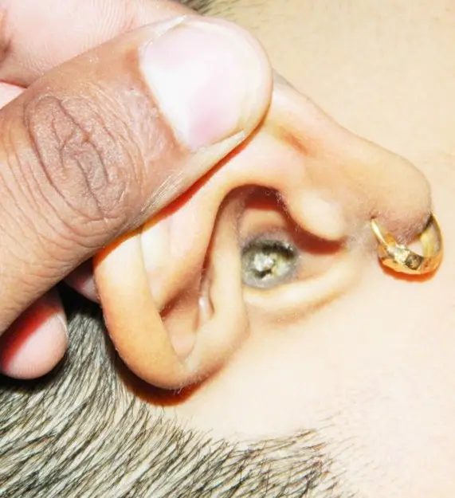
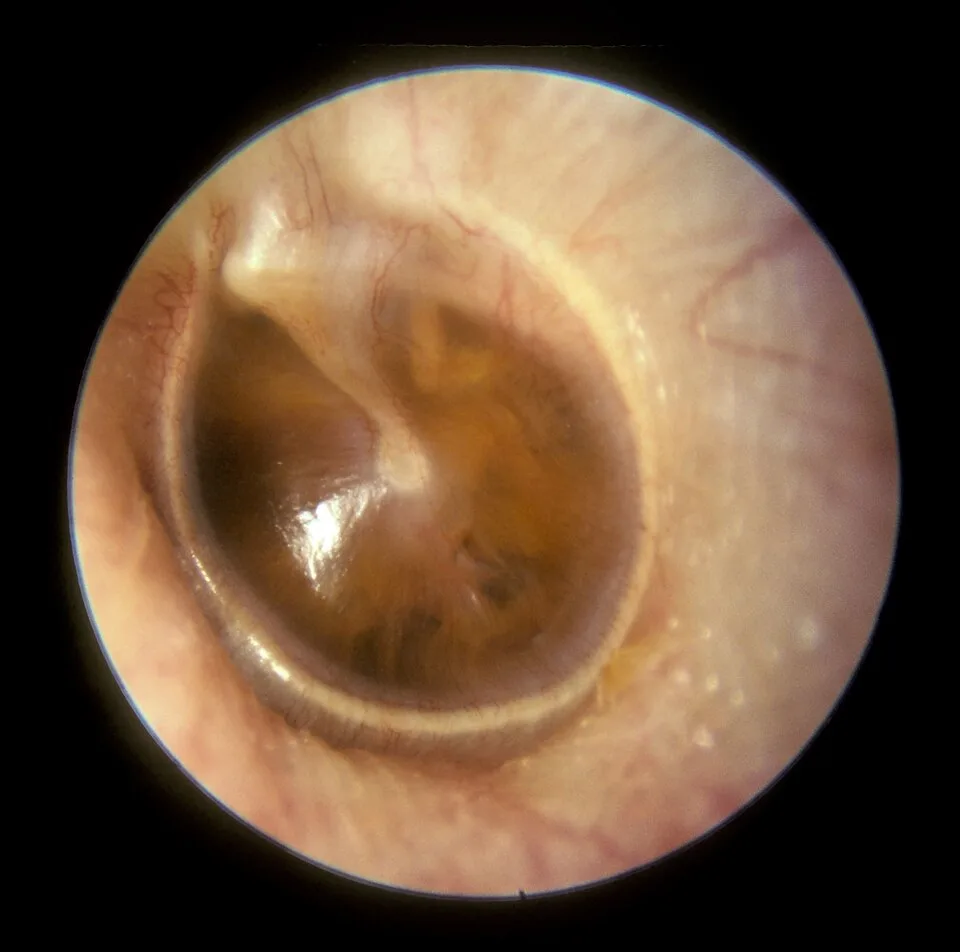

LOT_028 — S1.12 Troubles de l’audition — Phase A : monographie du SSP et dix diagnostics différentiels
Une plainte auditive réunit la baisse d’audition, l’acouphène et l’intolérance aux sons ; elle naît du conduit, de la caisse, de la cochlée, du nerf ou des vaisseauxS14S15. Le médecin exclut d’abord la surdité brusque, la fistule durale, le cholestéatome compliqué et le schwannome vestibulaire, car leur retard coûte l’audition ou la vieS2S11S7S6. Il distingue ensuite, au diapason puis à l’audiogramme, une surdité de transmission d’une surdité de perception, ce qui oriente vers les causes fréquentesS22S9. Il ne prescrit enfin qu’avec l’AIPS (information professionnelle suisse) du médicament ; il écrit « hors AIPS » lorsque l’indication manqueAIPS 36119AIPS 29349.
Contenu établi à partir des sources citées ; non validé cliniquement par un médecin.
1. Définition
L’OMS (Organisation mondiale de la santé) définit la perte auditive comme l’incapacité d’entendre aussi bien qu’une personne normo-entendante, dont les seuils atteignent 20 décibels (dB) ou mieux aux deux oreillesS17.
Elle qualifie la perte d’« invalidante » lorsque le seuil dépasse 35 dB à la meilleure oreille, et elle la gradue de légère à profondeS17.
Les HUG (Hôpitaux universitaires de Genève) définissent l’acouphène comme un bruit parasite, plus ou moins fort, perçu sans qu’une source sonore extérieure soit présenteS3.
Le NICE (National Institute for Health and Care Excellence) définit l’hyperacousie comme une intolérance aux sons quotidiens qui cause une détresse significative et gêne les activités de tous les joursS14.
Les HUG définissent enfin la perte auditive brusque comme une baisse supérieure à 30 dB, survenue en moins de 72 heures sans raison apparenteS2.
2. Épidémiologie (Suisse, puis Europe)
En Suisse, l’Obsan (Observatoire suisse de la santé) rapporte que 8,4 % de la population présentent des troubles de l’audition d’ordre médical, selon l’Enquête suisse sur la santéS13.
Les hommes âgés sont nettement plus touchés que les femmes, et l’écart atteint presque dix points de pourcentage dans les groupes d’âge les plus élevésS13.
Les HUG estiment qu’un tiers des personnes présente une presbyacousie dès 65 ans, et qu’entre 10 et 18 % de la population suisse souffre d’acouphènesS4S3.
En Europe, l’incidence de la surdité brusque idiopathique atteint 160 cas pour 100 000 habitants par an à Dresde, ce qui en fait une affection non rareS18.
Le classement des dix diagnostics suit la fréquence sourcée, tandis que le rang E marque l’ordre d’exclusion des formes graves ; la fenêtre rangs de fréquence justifie chaque rang.
Rangs de fréquence des dix diagnostics différentiels
Le rang suit la fréquence en Suisse lorsqu’elle est publiée, puis en Europe ; un rang sans pourcentage repose sur un argument sourcé écrit dans la ligne.
| Rang | Diagnostic (fichier) | Fréquence ou argument du rang | Gravité | Source |
|---|---|---|---|---|
| 1 | Presbyacousie (DX.4) | Elle touche un tiers des personnes dès 65 ans ; l’OMS compte plus de 25 % de pertes invalidantes après 60 ans. | Non grave ; elle isole et favorise la démence. | S4S17 |
| 2 | Bouchon de cérumen (DX.1) | Rang argumenté : le NICE demande d’exclure le cérumen avant tout bilan, et l’OMS le cite à tous les âges. | Non grave. | S14S17 |
| 3 | Otite moyenne avec épanchement (DX.2) | Rang argumenté par déduction : le NICE lui consacre une recommandation propre chez l’enfant de moins de 12 ans ; aucune prévalence suisse n’a été lue. | Non grave ; elle retarde le langage. | S16 |
| 4 | Surdité induite par le bruit (DX.5) | Rang argumenté : 46 % des adultes de 54 à 66 ans déclarent une exposition au bruit en Finlande. | Non grave ; elle reste irréversible. | S19S10 |
| 5 | Otospongiose (DX.3) | Sa prévalence atteint 1,3 % entre 54 et 66 ans dans une cohorte finlandaise. | Non grave. | S19 |
| 6 | Maladie de Ménière (DX.7) | Sa prévalence atteint 0,7 % dans la même cohorte finlandaise. | Non grave ; elle handicape par crises. | S19 |
| 7 | Surdité brusque neurosensorielle (DX.6) 🚩 | Son incidence atteint 160 pour 100 000 habitants par an à Dresde. | 🚩 E1 : le pronostic auditif dépend du délai. | S18S2 |
| 8 | Cholestéatome (DX.9) 🚩 | Rang argumenté : l’otite moyenne chronique, qui l’inclut, touche 5,3 % des adultes finlandais de 54 à 66 ans. | 🚩 E3 : il détruit l’oreille et menace l’encéphale. | S19S7 |
| 9 | Schwannome vestibulaire (DX.8) 🚩 | Sa prévalence diagnostiquée atteint 0,058 % au Danemark en 2016, pour 3,4 cas pour 100 000 habitants par an. | 🚩 E4 : il comprime le tronc cérébral s’il grossit. | S21S6 |
| 10 | Fistule artérioveineuse durale (DX.10) 🚩 | Elle représente environ 10 à 15 % des malformations artérioveineuses et reste donc rare. | 🚩 E2 : elle saigne si le drainage est cortical. | S11 |
L’ordre des fichiers DX.1 à DX.10 est conservé pour la Phase B ; le rang de fréquence ci-dessus remplace donc le numéro de fichier lorsqu’on raisonne en probabilité.
Le retentissement social impose un repérage actif ; selon l’Obsan, les appareils auditifs améliorent l’audition d’un tiers environ des personnes malentendantesS13. La fenêtre enjeux de santé publique est consacrée à ces chiffres.
Enjeux de santé publique
| Chiffre | Population | Année | Source |
|---|---|---|---|
| 8,4 % ont des troubles de l’audition d’ordre médical. | Population suisse interrogée par l’Enquête suisse sur la santé | 2022 (bulletin) | S13 |
| Un tiers présente une presbyacousie. | Personnes de 65 ans et plus, Suisse romande | 2026 (mise à jour) | S4 |
| 10 à 18 % souffrent d’acouphènes. | Population suisse de tous âges | 2025 (mise à jour) | S3 |
| 430 millions de personnes ont besoin d’une réhabilitation. | Monde | 2026 | S17 |
| 160 cas pour 100 000 habitants par an ont une surdité brusque. | Ville de Dresde | 2004 (publié en 2009) | S18 |
La Suva rappelle que les lésions dues au bruit surviennent souvent dans la jeunesse, alors que la gêne n’apparaît que plus tard, lorsque la presbyacousie s’y ajouteS10.
Les HUG lient le retrait social de la personne presbyacousique à la survenue d’une démence ; le repérage protège donc aussi la cognitionS4.
3. Physiopathologie
Le son traverse le conduit, fait vibrer le tympan et la chaîne des osselets, puis la cochlée le transforme en message nerveux porté par le nerf vestibulocochléaireS25S7.
Un obstacle du conduit ou de la caisse crée une surdité de transmission, tandis qu’une atteinte de la cochlée ou du nerf crée une surdité de perceptionS22S9.
La fenêtre anatomie de l’oreille en couleurs situe chaque étage, et la fenêtre corrélation perturbation, exploration et traitement relie chaque lésion à son examen et à sa correction.
Anatomie de l’oreille : où naît la plainte auditive
Coupe frontale de l’oreille : les étages de la surdité : Blausen Medical a dessiné cette illustration en couleurs, publiée sous licence CC BY 3.0S25.

Le lecteur repère d’abord sur le cliché brut le conduit, le tympan, les osselets, la cochlée, le nerf et la trompe.
- 1. Le repère 1 montre le conduit auditif externe, que le bouchon de cérumen obstrueS25S8.
- 2. Le repère 2 montre le tympan, qui devient mat et jaune lorsqu’un épanchement remplit la caisseS25S26.
- 3. Le repère 3 montre les osselets, que l’otospongiose fixe et que le cholestéatome érodeS25S22S7.
- 4. Le repère 4 montre la cochlée, siège de la presbyacousie, de la surdité due au bruit et de la surdité brusqueS25S4.
- 5. Le repère 5 montre le nerf vestibulocochléaire, que le schwannome comprime dans le conduit auditif interneS25S6.
- 6. Le repère 6 montre la trompe auditive, dont la dysfonction favorise l’épanchementS25S15.
Ce que l’image décide. Les repères 1 à 3 produisent une surdité de transmission, tandis que les repères 4 et 5 produisent une surdité de perceptionS22. Le diapason sépare donc ces deux groupes avant l’audiogramme.

L’acouphène traduit le plus souvent une perte auditive sous-jacente ; le NICE propose donc une évaluation audiologique à toute personne qui en souffreS15S3.
L’acouphène pulsatile synchrone au pouls traduit au contraire un flux vasculaire turbulent, comme celui d’une fistule artérioveineuse duraleS12S15.
Corrélation : perturbation, exploration, thérapeutique
| Perturbation | Exploration qui la montre | Thérapeutique qui la corrige | Source |
|---|---|---|---|
| Le cérumen obstrue le conduit et bloque la transmission. | L’otoscopie montre le bouchon. | Le retrait du bouchon rétablit l’audition. | S8S14 |
| Un épanchement remplit la caisse et freine le tympan. | La tympanométrie et l’otoscopie le montrent. | La surveillance, l’appareil ou l’aérateur transtympanique compensent la perte. | S16 |
| L’otospongiose fixe l’étrier dans la fenêtre ovale. | L’audiogramme montre une encoche de Carhart vers 2 000 Hz. | La chirurgie de l’étrier ou l’appareil corrigent la perte. | S22 |
| Le cholestéatome érode la chaîne ossiculaire. | L’otoscopie et le scanner des rochers montrent l’érosion. | La chirurgie retire l’épiderme et reconstruit la chaîne. | S7S22 |
| Les cellules ciliées cochléaires disparaissent avec l’âge ou le bruit. | L’audiogramme tonal montre une perte des aigus. | L’appareil auditif ou l’implant cochléaire réhabilitent. | S4S10 |
| L’hydrops endolymphatique fait fluctuer l’oreille interne. | L’audiogramme montre une perte des graves fluctuante. | La bétahistine et les mesures graduées réduisent les crises. | S5S20AIPS 36119 |
| Le schwannome comprime le nerf dans le conduit auditif interne. | L’IRM (imagerie par résonance magnétique) du conduit auditif interne le montre. | La surveillance, la chirurgie ou la radiochirurgie le contrôlent. | S6S14 |
| La fistule durale court-circuite artère et veine méningées. | L’IRM puis l’angiographie numérisée le montrent. | L’embolisation ferme le court-circuit. | S11S12 |
Le bruit lèse définitivement la cochlée ; la Suva fixe donc à 85 dB(A) sur 8 heures le niveau au-delà duquel une femme enceinte ne peut pas travaillerS10.
4. Démarche diagnostique
Le médecin exclut d’abord la surdité brusque neurosensorielle (E1), car le NICE impose un avis spécialisé dans les 24 heures si la perte s’est installée en trois jours ou moinsS14S2.
Il exclut ensuite la fistule durale (E2) devant un acouphène pulsatile, puis le cholestéatome (E3) devant une otorrhée chronique, et enfin le schwannome (E4) devant une asymétrieS15S7S14.
Une hypoacousie avec vertige aigu peut révéler une ischémie de l’artère cérébelleuse antéro-inférieure ; le HINTS (Head Impulse, Nystagmus, Test of Skew) peut alors rester faussement rassurantS9.
Il discrimine enfin les causes fréquentes par l’otoscopie, le diapason et l’audiogramme ; la fenêtre tableau comparatif des dix diagnostics réunit ces éléments en dix colonnes.
Tableau comparatif des dix diagnostics différentiels (10 colonnes)
| DX | Rang | E / 🚩 | Installation | Côté | Otoscopie | Diapason (Weber, Rinne) | Signe clé | Examen qui tranche | Conduite immédiate |
|---|---|---|---|---|---|---|---|---|---|
| DX.1 Bouchon de cérumen | 2 | — | Brutale après bain ou progressive | Uni- ou bilatéral | Un bouchon brun masque le tympan. | Weber vers le bouchon ; Rinne négatif | La plénitude suit l’entrée d’eau. | Otoscopie après retrait | On ramollit puis on retire le bouchon. |
| DX.2 Otite avec épanchement | 3 | — | Progressive, après rhume | Souvent bilatéral | Le tympan est mat, jaune ou rétracté. | Transmission | L’enfant fait répéter et parle tard. | Tympanométrie plate | On réévalue l’audition après 3 mois. |
| DX.3 Otospongiose | 5 | — | Progressive sur des années | Bilatéral asymétrique | Le tympan est normal. | Transmission | L’histoire familiale ou la grossesse aggrave. | Audiogramme avec encoche de Carhart | On adresse à l’ORL (oto-rhino-laryngologiste) pour chirurgie ou appareil. |
| DX.4 Presbyacousie | 1 | — | Lente après 65 ans | Symétrique | Le tympan est normal. | Perception symétrique | Le bruit de fond gêne la compréhension. | Audiogramme tonal et vocal | On propose l’appareil dès le degré moyen. |
| DX.5 Surdité due au bruit | 4 | — | Lente, ou aiguë après explosion | Bilatéral | Le tympan est normal. | Perception | L’exposition professionnelle ou de loisir domine. | Audiogramme tonal | On protège l’oreille et on déclare à la Suva si besoin. |
| DX.6 Surdité brusque | 7 | 🚩 E1 | En 72 heures au plus | Unilatéral | Le tympan est normal. | Weber vers l’oreille saine ; Rinne positif | L’oreille se bouche sans douleur. | Audiogramme en urgence | On adresse à l’ORL dans les 24 heures. |
| DX.7 Maladie de Ménière | 6 | — | Par crises de 20 minutes à 12 heures | Unilatéral au début | Le tympan est normal. | Perception | Le vertige s’associe à plénitude et acouphène. | Audiogramme des graves documenté | On traite la crise et on adresse à l’ORL. |
| DX.8 Schwannome vestibulaire | 9 | 🚩 E4 | Progressive | Unilatéral | Le tympan est normal. | Perception asymétrique | L’asymétrie dépasse 15 dB sur deux fréquences voisines. | IRM du conduit auditif interne | On adresse pour IRM et décision pluridisciplinaire. |
| DX.9 Cholestéatome | 8 | 🚩 E3 | Progressive | Unilatéral | Une masse blanche ou une poche de rétraction occupe l’attique. | Transmission | L’otorrhée chronique sent mauvais. | Otoscopie au microscope puis scanner | On adresse à l’ORL pour chirurgie. |
| DX.10 Fistule durale | 10 | 🚩 E2 | Progressive | Unilatéral | Le tympan est normal. | Souvent normal | L’acouphène bat au rythme du pouls. | IRM, angio-IRM puis angiographie | On adresse en neuroradiologie interventionnelle. |
Ce tableau classe le rang selon la fréquence, alors que la colonne E fixe l’ordre d’exclusion ; un rang faible ne retarde donc jamais l’exclusion d’un diagnostic graveS14S11.
La fenêtre diagnostics discriminants précise, pour les quatre situations les plus trompeuses, le piège et la conduite si le résultat est positif.
Diagnostics discriminants : élément qui tranche, piège, conduite
| DX | Élément qui tranche | Piège | Conduite si positif | Source |
|---|---|---|---|---|
| Surdité brusque (E1) | Le Weber latéralise vers l’oreille saine, ce qui signe une perception. | On prend la plainte pour un bouchon ou une otite. | On adresse à l’ORL dans les 24 heures. | S14S2 |
| Fistule durale (E2) | L’acouphène bat au rythme du pouls. | On l’attribue à l’anxiété faute d’imagerie. | On demande une angio-IRM puis un avis neuroradiologique. | S15S12 |
| Cholestéatome (E3) | L’otorrhée chronique s’associe à une masse blanche de l’attique. | On répète des gouttes sans examiner l’attique. | On adresse à l’ORL pour scanner et chirurgie. | S7 |
| Schwannome (E4) | L’asymétrie dépasse 15 dB sur deux fréquences voisines. | On attribue l’asymétrie à l’âge. | On demande une IRM du conduit auditif interne. | S14S6 |
5. Anamnèse ciblée et drapeaux rouges
L’anamnèse précise d’abord le délai d’installation, car une perte installée en trois jours ou moins dans les 30 derniers jours impose un avis dans les 24 heuresS14.
Elle précise ensuite le côté, la fluctuation, le vertige, l’otorrhée, la douleur et l’acouphène, puisque chacun oriente vers un étage précisS14S9.
Elle recherche enfin l’exposition au bruit, les médicaments ototoxiques, l’histoire familiale et le retentissement psychique ; la fenêtre questions ciblées et leur raison détaille chaque question.
Questions ciblées et raison physiopathologique
| Question | Raison | Ce que la réponse oriente | Source |
|---|---|---|---|
| La perte s’est-elle installée en moins de 72 heures ? | Un délai court évoque une atteinte cochléaire aiguë. | Une réponse positive oriente vers la surdité brusque. | S2S14 |
| Une oreille ou les deux sont-elles touchées ? | L’atteinte unilatérale suggère une cause locale ou nerveuse. | L’unilatéral oriente vers bouchon, surdité brusque, schwannome ou cholestéatome. | S14 |
| L’audition fluctue-t-elle avec des vertiges ? | L’hydrops fait varier la pression endolymphatique. | Une fluctuation avec vertige oriente vers la maladie de Ménière. | S5S20 |
| L’acouphène bat-il au rythme du pouls ? | Un flux vasculaire turbulent produit un bruit pulsatile. | Une réponse positive impose une imagerie vasculaire. | S15S12 |
| L’oreille coule-t-elle depuis des semaines ? | L’épiderme infecté de l’attique entretient l’otorrhée. | Une otorrhée chronique oriente vers le cholestéatome. | S7 |
| Travaille-t-on dans le bruit ou écoute-t-on fort ? | Le bruit détruit les cellules ciliées de façon cumulative. | Une exposition oriente vers la surdité due au bruit. | S10 |
| Un parent a-t-il opéré son oreille ? | L’otospongiose se transmet sur un mode autosomique dominant. | Une histoire familiale oriente vers l’otospongiose. | S22 |
| Le patient évite-t-il les sons quotidiens ? | L’hyperacousie réduit la tolérance aux sons ordinaires. | Une détresse impose un avis spécialisé. | S14 |
| L’acouphène fait-il penser au suicide ? | La détresse peut devenir un danger immédiat. | Un risque élevé impose une équipe de crise immédiate. | S15 |
Chaque drapeau rouge impose une action immédiate, et la fenêtre drapeaux rouges et action imposée les classe du plus grave au moins grave.
Drapeaux rouges, signification et action immédiate
| Drapeau rouge | Signification | Action immédiate | Source |
|---|---|---|---|
| Une perte unilatérale s’accompagne d’une asymétrie faciale ou d’un trouble sensitif. | Un AVC (accident vasculaire cérébral) peut en être la cause. | On suit la filière AVC ou on adresse à l’ORL dans les 24 heures. | S14 |
| Une hypoacousie accompagne un vertige aigu. | Une ischémie cérébelleuse antéro-inférieure peut en être la cause. | On organise une imagerie cérébrale en urgence. | S9 |
| La perte s’est installée en trois jours ou moins, ou s’aggrave en 4 à 90 jours. | Une surdité brusque neurosensorielle est probable. | On adresse à l’ORL ou aux urgences dans les 24 heures si la perte date de 30 jours au plus ; au-delà de 30 jours, ou si elle s’aggrave en 4 à 90 jours, on adresse dans les 2 semaines. | S14 |
| L’acouphène est lié à un risque suicidaire élevé. | La détresse met la vie en danger. | On adresse immédiatement à l’équipe de crise psychiatrique. | S15 |
| Un adulte présente un épanchement de l’oreille moyenne sans infection des voies aériennes supérieures, ou persistant après elle. | Une tumeur du rhinopharynx doit être écartée, surtout chez une personne d’origine chinoise ou du Sud-Est asiatique (déduction). | On adresse à l’ORL ; chez une personne d’origine chinoise ou du Sud-Est asiatique, on envisage la filière cancer suspecté. | S14 |
| Une otalgie avec otorrhée résiste 72 heures chez un immunodéprimé. | Une infection compliquée menace l’os temporal. | On adresse à l’ORL dans les 24 heures. | S14 |
| L’acouphène est pulsatile. | Une fistule durale ou une anomalie vasculaire est possible. | On demande une imagerie vasculaire. | S15S11 |
| Une otorrhée chronique s’associe à un vertige ou à une paralysie faciale. | Un cholestéatome érode le labyrinthe ou le canal facial. | On adresse à l’ORL le jour même. | S7S22 |
6. Examen physique ciblé, région par région
L’examen commence par le pavillon et le conduit, puis il évalue le tympan, l’audition au diapason, les nerfs crâniens et l’équilibre ; chaque région ouvre sa propre fenêtre.
La première région est le conduit auditif externe, où l’on cherche le bouchon, l’otorrhée et le corps étranger.
Région 1 — conduit auditif externe
Le médecin tire le pavillon vers le haut et l’arrière chez l’adulte, puis il introduit l’otoscope sans dépasser la partie cartilagineuse du conduit.
Le conduit normal montre une peau rose et un peu de cérumen ; un bouchon brun, compact et obstruant explique une surdité de transmissionS8S14.
Bouchon de cérumen à l’entrée du conduit : Anand2202 a pris cette photographie en couleurs, publiée sous licence CC BY-SA 4.0S28.

Le lecteur cherche d’abord sur le cliché brut ce qui masque l’entrée du conduit.
Ce que l’image décide. Un bouchon qui masque le tympan justifie son retrait avant tout autre bilan, car le NICE demande d’exclure le cérumen d’abordS14.

Le piège consiste à conclure au bouchon sans revoir le tympan après le retrait ; le NICE adresse donc à l’ORL si le tympan reste invisibleS14.
La deuxième région est le tympan et la caisse, dont l’aspect sépare l’épanchement, la perforation et le cholestéatome.
Région 2 — tympan et caisse du tympan
Le tympan normal est gris nacré, translucide, avec un triangle lumineux et le manche du marteau visibles ; on examine aussi la pars flaccida, au-dessus du marteau.
Un tympan jaune ambré, mat, parfois avec des bulles, traduit un épanchement de l’oreille moyenne sans inflammation aiguëS26S16.
Épanchement séreux de l’oreille moyenne chez l’adulte : Michael Hawke a pris cette photographie otoscopique en couleurs, publiée sous licence CC BY-SA 4.0S26.

Le lecteur regarde d’abord sur le cliché brut la couleur du tympan, qui est ici anormale.
- 1. Le repère 1 montre un tympan gauche jaune doré, coloré par un liquide clair couleur paille qui remplit la caisseS26.
Ce que l’image décide. Un tympan jaune et mat, sans rougeur ni bombement, oriente vers un épanchement ; on réévalue alors l’audition après 3 mois, sans antibiotiqueS16.

Une granulation rouge ou une masse blanche dans l’attique traduit un cholestéatome, même si le reste du tympan paraît sainS27S7.
Cholestéatome de l’attique : Michael Hawke a pris cette photographie otoscopique en couleurs, publiée sous licence CC BY 4.0S27.

Le lecteur regarde d’abord sur le cliché brut la région qui est située au-dessus du manche du marteau.
- 1. Le repère 1 montre une petite masse rouge cerise de tissu de granulation née de la pars flaccida, sous laquelle une perforation menait au cholestéatomeS27.
Ce que l’image décide. Une granulation de la pars flaccida impose un examen ORL au microscope, puis un scanner des rochers, car le cholestéatome relève de la chirurgieS7S22.

Le piège consiste à regarder seulement la pars tensa ; le cholestéatome d’attique se cache précisément dans la pars flaccidaS27.
La troisième région est l’acoumétrie au diapason, qui sépare transmission et perception avant tout audiogramme.
Région 3 — acoumétrie au diapason de 512 Hz
Le médecin pose le diapason de 512 Hz au sommet du crâne pour le test de Weber, puis alternativement sur la mastoïde et devant le conduit pour le test de RinneS22.
| Résultat | Interprétation | Diagnostic évoqué | Source |
|---|---|---|---|
| Le Weber latéralise vers l’oreille atteinte et le Rinne est négatif. | La conduction osseuse dépasse la conduction aérienne : il s’agit d’une transmission. | On évoque bouchon, épanchement, otospongiose ou cholestéatome. | S22 |
| Le Weber latéralise vers l’oreille saine et le Rinne est positif. | La cochlée ou le nerf de l’oreille atteinte répondent moins : il s’agit d’une perception. | On évoque surdité brusque, schwannome ou Ménière. | S22S2 |
| Le Weber reste central et les deux Rinne sont positifs. | L’atteinte est symétrique ou absente. | On évoque presbyacousie ou surdité due au bruit. | S4S10 |
Le piège consiste à juger une perte légère au diapason, car il manque de sensibilité ; l’audiogramme reste donc indispensableS9.
La quatrième région est l’examen neurologique et vestibulaire ciblé, qui cherche une atteinte du nerf facial, du trijumeau ou du cervelet.
Région 4 — nerfs crâniens, équilibre et auscultation
Le médecin teste la motricité faciale et la sensibilité cornéenne et faciale, car le schwannome avancé atteint le nerf facial et le trijumeauS6.
Devant un vertige, il recherche le nystagmus et réalise le test d’impulsion céphalique, en sachant qu’une hypoacousie associée peut cacher une ischémie cérébelleuseS9.
Devant un acouphène pulsatile, il ausculte la région rétro-auriculaire et temporale, car un souffle objectif oriente vers une fistule durale ; l’imagerie reste néanmoins nécessaireS15S12.
7. Approche syndromique
Le médecin regroupe les signes en quatre syndromes, puis il oriente chacun vers ses diagnostics ; la fenêtre syndromes, signes fonctionnels et signes physiques les détaille.
Syndromes : signes fonctionnels et signes physiques
| Syndrome | Signes fonctionnels | Signes physiques | Diagnostics | Source |
|---|---|---|---|---|
| 7.1 Surdité de transmission | Le patient entend mieux au téléphone collé à l’oreille et perçoit sa voix plus fort. | Le Weber latéralise vers l’oreille atteinte et le Rinne est négatif. | DX.1, DX.2, DX.3, DX.9 | S22 |
| 7.2 Surdité de perception | Le patient comprend mal dans le bruit et entend sans comprendre. | Le Weber latéralise vers l’oreille saine et le Rinne est positif. | DX.4, DX.5, DX.6, DX.7, DX.8 | S4S22 |
| 7.3 Syndrome cochléo-vestibulaire | Le vertige rotatoire s’associe à une hypoacousie, un acouphène et une plénitude. | Un nystagmus apparaît pendant la crise. | DX.7 ; AVC à exclure | S5S9 |
| 7.4 Acouphène pulsatile | Le bruit bat au rythme du pouls. | Un souffle peut être perçu à l’auscultation. | DX.10 | S12S15 |
| 7.5 Hyperacousie | Des sons quotidiens, comme des pièces qui tintent ou un aspirateur, paraissent beaucoup trop forts, parfois douloureux. | L’examen otologique reste souvent normal ; on cherche une cause associée. | DX.7 ; acouphène, migraine, paralysie faciale | S29S14 |
L’hyperacousie peut accompagner chacun de ces syndromes ; le NICE la retient comme motif d’adresse lorsqu’elle cause une détresse significativeS14.
Selon le NHS (National Health Service), l’hyperacousie peut accompagner un acouphène, un traumatisme crânien, une maladie de Ménière, une paralysie de Bell ou une migraineS29.
Le NHS la distingue de la misophonie, réponse émotionnelle de colère ou de dégoût, et de la phonophobie, réponse anxieuse à certains sonsS29.
8. Diagnostic positif et critères
Aucun critère unique ne définit le trouble auditif ; le diagnostic positif repose donc sur des seuils audiométriques et des critères propres à chaque causeS17S2S20.
La fenêtre critères et seuils par diagnostic réunit ces critères avec leur auteur et leur année, ainsi que ce qui suffit et ce qui ne suffit pas.
Critères et seuils, avec leur auteur et leur année
| Situation | Critère retenu | Ce qui ne suffit pas | Source |
|---|---|---|---|
| Perte auditive (OMS, 2026) | Le seuil dépasse 20 dB ; la perte devient invalidante au-delà de 35 dB à la meilleure oreille. | Une plainte sans audiogramme ne chiffre pas la perte. | S17 |
| Perte auditive brusque (HUG, 2026) | La baisse dépasse 30 dB en moins de 72 heures sans raison apparente. | Le terme « idiopathique » n’est retenu qu’après exclusion d’une cause infectieuse ou tumorale, présente chez moins de 10 % des patients. | S2 |
| Maladie de Ménière certaine (Bárány, 2015) | Au moins deux épisodes de vertige spontané durent chacun de 20 minutes à 12 heures, avec une perte neurosensorielle des fréquences graves à moyennes documentée et des symptômes auriculaires fluctuants. | Des vertiges sans audiogramme documenté ne suffisent pas. | S20 |
| Maladie de Ménière probable (Bárány, 2015) | Les symptômes vestibulaires épisodiques durent de 20 minutes à 24 heures, avec des symptômes auriculaires fluctuants. | La forme probable n’exige pas d’audiogramme ; elle reste donc moins spécifique. | S20 |
| Hyperacousie (NICE, 2018) | L’intolérance aux sons quotidiens cause une détresse significative et gêne la vie quotidienne. | Une simple gêne aux bruits forts ne suffit pas. | S14 |
| Asymétrie à explorer (NICE, 2018) | La différence atteint 15 dB ou plus sur deux fréquences voisines parmi 0,5, 1, 2, 4 et 8 kHz. | Une asymétrie isolée ne prouve pas un schwannome ; l’IRM tranche. | S14 |
| Épanchement avec perte (NICE, 2023) | La perte associée à l’épanchement se réévalue après 3 mois si elle est bilatérale. | Un tympan mat sans test auditif ne mesure pas le retentissement. | S16 |
Le NICE propose l’index fonctionnel des acouphènes (Tinnitus Functional Index) pour mesurer le retentissement chez l’adulte ; ce score suit l’évolution mais ne pose pas de diagnosticS15.
9. Examens complémentaires
9.a — Aucun examen unique n’est l’étalon-or du trouble auditif ; l’audiogramme tonal et vocal en tient lieu, car il chiffre la perte et précise son typeS9S14.
9.b — En première intention, le médecin demande donc un audiogramme tonal et vocal, complété par une tympanométrie si une cause de l’oreille moyenne est suspectéeS15S16.
Audiogramme tonal et vocal : indication, prescription, interprétation
Indication : le NICE propose une évaluation audiologique à toute personne qui souffre d’acouphènes et à tout adulte qui consulte pour une baisse d’audition, après exclusion du cérumenS15S14.
Prescription : on demande une audiométrie tonale en conduction aérienne et osseuse, puis une audiométrie vocale qui apprécie la compréhensionS9.
| Résultat | Signification | Conduite | Source |
|---|---|---|---|
| Les seuils restent à 20 dB ou mieux aux deux oreilles. | L’audition est normale selon l’OMS. | On cherche une autre cause de la plainte, comme une hyperacousie. | S17 |
| Un écart sépare conduction osseuse normale et aérienne abaissée. | La perte est de transmission. | On recherche bouchon, épanchement, otospongiose ou cholestéatome. | S22 |
| Une encoche apparaît vers 2 000 Hz en conduction osseuse. | L’encoche de Carhart oriente vers une otospongiose. | On adresse à l’ORL pour scanner et décision chirurgicale. | S22 |
| Les aigus chutent de façon symétrique après 65 ans. | La presbyacousie est probable. | On propose l’appareil dès le degré moyen. | S4 |
| Une perte unilatérale dépasse 30 dB, installée en moins de 72 heures. | La perte auditive brusque est probable. | On adresse à l’ORL dans les 24 heures. | S2S14 |
| Une asymétrie atteint 15 dB sur deux fréquences voisines. | Une lésion rétrocochléaire doit être exclue. | On envisage une IRM du conduit auditif interne. | S14 |
| Les graves baissent de façon fluctuante d’un examen à l’autre. | L’hydrops endolymphatique est probable. | On confronte le tracé aux critères de Bárány. | S20 |
| La perte dépasse 35 dB à la meilleure oreille. | La perte est invalidante selon l’OMS. | On organise la réhabilitation auditive. | S17 |
Le piège consiste à juger la compréhension sur le seul audiogramme tonal ; la gêne dans le bruit n’apparaît pas toujours sur le tracé, d’où l’audiométrie vocaleS14.
Tympanométrie et réflexe stapédien
Indication : le NICE propose une tympanométrie lorsqu’une dysfonction de l’oreille moyenne ou de la trompe auditive est suspectée, et il l’inclut dans le bilan formel de l’épanchement de l’enfantS15S16.
La tympanométrie est l’examen qui mesure la compliance du système tympano-ossiculaire sous des pressions d’air variablesS22.
| Résultat | Signification | Conduite | Source |
|---|---|---|---|
| La courbe garde un pic centré. | Le tympan et la chaîne bougent normalement. | On cherche la cause plus loin, dans la cochlée ou le nerf. | S22 |
| La courbe devient plate (déduction : le liquide immobilise le tympan). | Un épanchement de la caisse est probable. | On réévalue l’audition après 3 mois. | S16S22 |
| Le réflexe stapédien manque à forte stimulation, au-delà de 80 dB. | L’arc acoustico-facial ou l’étrier ne répond pas (déduction de son mécanisme). | On confronte le résultat à l’audiogramme et à l’otoscopie. | S22 |
Le NICE ne recommande ni le réflexe acoustique ni la mesure des seuils d’inconfort pour explorer un acouphène, ce qui évite des examens inutilesS15.
9.c — Chez l’enfant, le test auditif s’adapte à l’âge et au développement ; si l’IRM est impossible, un scanner injecté la remplace pour l’acouphène pulsatileS16S15.
9.d — En seconde intention, l’IRM du conduit auditif interne, le scanner des rochers et l’imagerie vasculaire répondent chacun à une question précise.
IRM du conduit auditif interne
| Indication | Niveau de recommandation | Source |
|---|---|---|
| Une perte auditive s’associe à un signe localisateur, comme une faiblesse faciale. | Le NICE recommande l’IRM, quels que soient les seuils. | S14 |
| Une perte neurosensorielle présente une asymétrie de 15 dB sur deux fréquences voisines. | Le NICE propose de l’envisager. | S14 |
| Un acouphène non pulsatile s’associe à des signes neurologiques, otologiques ou cervicaux. | Le NICE recommande l’IRM. | S15 |
| Un acouphène non pulsatile unilatéral reste isolé. | Le NICE propose de l’envisager. | S15 |
| Un acouphène symétrique non pulsatile reste isolé. | Le NICE ne recommande aucune imagerie. | S15 |
Interprétation : une masse du conduit auditif interne ou de l’angle ponto-cérébelleux oriente vers un schwannome, dont la prise en charge dépend de la taille, de l’audition et de l’âgeS6.
Scanner des rochers
Prescription : on demande une tomodensitométrie en coupes fines axiales, avec reconstructions coronales et sagittales, sans injectionS22.
Interprétation : l’examen évalue le cadre osseux, le canal facial, l’aération de la caisse et de la mastoïde et l’état de la chaîne ossiculaire ; il précède ainsi la chirurgieS22.
Le NICE le propose aussi, injecté, lorsqu’une anomalie osseuse ou de l’oreille moyenne explique un acouphène pulsatile, par exemple une tumeur glomiqueS15.
Imagerie vasculaire de l’acouphène pulsatile
Le NICE recommande une imagerie pour tout acouphène pulsatileS15. S’il est synchrone au pouls, il propose une angio-IRM ou une IRM de la tête, du cou, du rocher et du conduit auditif interneS15.
L’Inselspital confirme le diagnostic de fistule durale par l’IRM et par l’angiographie numérique par soustraction, qui visualise sélectivement les vaisseauxS11.
| Classe de Borden | Drainage | Risque annuel | Conduite | Source |
|---|---|---|---|---|
| Type I | Le sang s’écoule dans un gros sinus veineux, sans drainage cortical. | Le risque de rupture reste inférieur à 0,6 % par an ; 13 % guérissent spontanément. | On surveille par imagerie, car la transformation atteint environ 1,4 % par an. | S11 |
| Types II et III | Le sang reflue vers les veines corticales. | Le risque atteint environ 2 % par an avec acouphène, 10 % avec congestion veineuse. | On traite, le plus souvent par embolisation. | S11S12 |
10. Arbre décisionnel
L’arbre se lit de haut en bas : il exclut les graves, puis il sépare transmission et perception, et chaque nœud nomme un signe, un examen ou un geste.
- Si une asymétrie faciale ou un trouble sensitif accompagne la perte, alors le médecin suit la filière AVCS14.
- Si une hypoacousie accompagne un vertige aigu, alors il organise une imagerie cérébrale, même si le HINTS paraît rassurantS9.
- Si la perte s’est installée en trois jours ou moins, alors il adresse à l’ORL dans les 24 heures (E1)S14S2.
- Si l’acouphène bat au rythme du pouls, alors il demande une angio-IRM, puis un avis de neuroradiologie interventionnelle (E2)S15S12.
- Si l’otorrhée est chronique, ou si une masse blanche occupe l’attique, alors il adresse à l’ORL pour scanner et chirurgie (E3)S7S22.
- Si un risque suicidaire élevé accompagne l’acouphène, alors il adresse à l’équipe de crise immédiatementS15.
- Sinon, l’otoscopie décide : un bouchon se retire, un tympan mat oriente vers un épanchement, un tympan normal conduit au diapasonS14S16.
- Si le diapason montre une transmission à tympan normal, alors l’audiogramme recherche l’encoche de Carhart de l’otospongioseS22.
- Si le diapason montre une perception, alors l’audiogramme décide : asymétrie de 15 dB vers l’IRM (E4), graves fluctuants vers Ménière, aigus symétriques vers presbyacousie ou bruitS14S20S4.
11. Prise en charge selon les recommandations suisses
11.A — Le but est de restaurer une audition utile et la communication, de préserver la cochlée par un traitement précoce et d’éviter le retrait socialS4S2.
11.B — Les moyens suivent l’urgence ; la surdité brusque reçoit une conduite chronologique d’urgence, parce que les résultats sont meilleurs lorsque le traitement débute tôtS2.
Urgence — conduite chronologique de la surdité brusque
| Moment | Geste | Raison | Source |
|---|---|---|---|
| Heure 0 | Le médecin vérifie l’absence d’asymétrie faciale, de trouble sensitif et de vertige aigu. | Un AVC doit d’abord être exclu. | S14S9 |
| Heure 0 | Il examine le conduit et le tympan, puis il fait le Weber et le Rinne. | Un bouchon ou une otite expliquent une fausse urgence. | S14S22 |
| Avant 24 heures | Il adresse à l’ORL ou aux urgences. | Le NICE fixe ce délai pour une perte installée en trois jours ou moins. | S14 |
| Chez l’ORL | L’audiogramme et l’anamnèse écartent une cause infectieuse ou tumorale ; une IRM complète parfois le bilan. | Une telle cause existe chez moins de 10 % des patients. | S2 |
| Chez l’ORL | L’ORL discute une cortisone par voie orale ou intraveineuse, selon la sévérité de la perte. | Le NICE propose d’envisager un stéroïde chez l’adulte. | S2S14 |
| Après la phase aiguë | L’ORL contrôle l’audiogramme et discute la réhabilitation de la perte résiduelle. | L’ORL fixe le contrôle audiométrique à la fin du traitement, puis à distance ; la perte résiduelle stable oriente la réhabilitation (déduction, délai précis non porté par S2 et S5). | S5 |
Le traitement suit ensuite la cause : on retire le bouchon, on surveille l’épanchement, on appareille la perte et on opère le cholestéatome ; la fenêtre traitement par diagnostic précise chaque conduite.
Traitement par diagnostic : moyen, durée, contrôle et échec
| Diagnostic | Moyen | Durée ou délai | Contrôle | Critère d’échec | Source |
|---|---|---|---|---|---|
| DX.1 Bouchon | On ramollit, puis on irrigue à l’irrigateur électrique, on aspire au microscope ou on retire à la curette. | Le ramollissant s’applique juste avant ou jusqu’à 5 jours avant l’irrigation. | On revoit le tympan après le retrait. | Après deux échecs d’irrigation, on adresse à un service spécialisé ou à l’ORL. | S14S8 |
| DX.2 Épanchement | On surveille, on propose un appareil auditif ou un aérateur transtympanique. | On réévalue l’audition après 3 mois. | On mesure le langage et le retentissement scolaire. | Une perte persistante fait discuter les aérateurs. | S16 |
| DX.3 Otospongiose | L’ORL propose la chirurgie de l’étrier ou un appareil auditif. | Le délai dépend du choix du patient. | On contrôle l’audiogramme après le geste. | Une otospongiose labyrinthisée relève de l’appareillage. | S22S23 |
| DX.4 Presbyacousie | On surveille les formes légères et on appareille dès le degré moyen. | On teste l’audition chaque année dans les formes légères. | On évalue la communication et le retrait social. | Un gain insuffisant fait discuter l’implant cochléaire. | S4 |
| DX.5 Bruit | On supprime l’exposition et on protège l’oreille. | La protection dure toute la vie professionnelle. | La Suva propose un examen auditif ciblé dans son audiomobile. | Une aggravation impose un bilan ORL. | S10 |
| DX.7 Ménière | On explique la maladie, puis on gradue antiémétiques en crise, bétahistine, diurétiques (hors AIPS pour cette indication), aérateur et corticoïdes intratympaniques (hors AIPS). | La bétahistine agit après quelques jours à quelques semaines. | On compte les crises et on suit l’audiogramme. | Des crises incontrôlées font discuter la gentamicine intratympanique ou la chirurgie. | S5AIPS 36119 |
| DX.8 Schwannome | L’équipe choisit surveillance, chirurgie ou radiochirurgie. | Le choix dépend de la taille, de l’audition et de l’âge. | L’IRM suit la taille de la tumeur. | Une croissance ou une compression change la stratégie. | S6 |
| DX.9 Cholestéatome | L’ORL retire l’épiderme, ferme le tympan et reconstruit la chaîne. | La voie rétro-auriculaire impose trois jours d’hospitalisation. | L’ORL surveille la récidive à l’otoscopie. | Une otorrhée récidivante fait suspecter une récidive (déduction). | S7 |
| DX.10 Fistule durale | On embolise par voie endovasculaire, surtout si l’acouphène invalide ou si le drainage est cortical. | Le traitement n’est pas urgent sans saignement. | On contrôle par imagerie les formes surveillées. | Une transformation en drainage cortical impose le traitement. | S12S11 |
Le NICE déconseille l’irrigation manuelle à la seringue, ainsi que les antibiotiques et les corticoïdes oraux ou nasaux pour l’épanchement ; il déconseille aussi la bétahistine pour l’acouphèneS14S16S15.
La pharmacologie suit l’AIPS ; la fenêtre médicaments et extraits AIPS donne la dose écrite dans l’AIPS, ou la mention « hors AIPS » sans dose lorsque l’indication manque.
Médicaments : molécule, dose AIPS, voie, durée, contre-indication
| Molécule ® | Dose AIPS | Voie et durée | Contre-indication majeure | Extrait AIPS |
|---|---|---|---|---|
| Bétahistine, Betaserc® (n° 36119) | Chez l’adulte, la dose atteint 24 à 48 mg par jour, en 2 ou 3 prises, de préférence aux repasAIPS 36119. | La voie est orale ; l’effet apparaît après quelques jours, parfois seulement après quelques semaines. | L’AIPS écrit : « Les patients souffrant de phéochromocytome ne doivent pas être traités par Betaserc » ; l’hypersensibilité au principe actif l’interdit aussi. | L’AIPS indique le « Syndrome de Ménière et syndromes méniériformes »AIPS 36119. |
| Prednisone, Prednisone Streuli® (n° 29349) | Pour la surdité brusque, l’indication est hors AIPS ; aucune dose n’est donc écrite ici. | L’ORL décide de la voie orale ou intraveineuse ; au-delà de quelques jours, la dose diminue graduellement. | L’AIPS écrit : « Il n’existe en général pas de contre-indications lors de situations rendant l’administration de glucocorticoïdes indispensable pour la survie » ; hors de ces situations, l’hypersensibilité à la prednisone l’interdit. | L’AIPS fixe le seuil de Cushing de la prednisone à 7,5 mgAIPS 29349. |
| Ramollissant de cérumen | Le produit cité par le protocole des HUG est hors AIPS dans le corpus lu ; aucune dose n’est donc écrite. | Le NHS propose 2 à 3 gouttes d’huile d’olive, 3 à 4 fois par jour pendant 3 à 5 jours. | Une perforation tympanique interdit les gouttes selon le NHS. | Aucun extrait AIPS n’a été lu.S8S24 |
Grossesse, Betaserc : l’AIPS écrit : « La bétahistine ne doit pas être prise pendant la grossesse, sauf si explicitement nécessaire » AIPS 36119.
Allaitement, Betaserc : l’AIPS écrit : « L'utilisation de Betaserc n'est pas recommandée pendant la période d'allaitement » AIPS 36119.
Grossesse, prednisone : l’AIPS écrit que ce glucocorticoïde « ne devrait être utilisé que si cela est clairement nécessaire, en particulier durant les premiers trois mois » AIPS 29349.
Allaitement, prednisone : l’AIPS écrit : « Pendant l'application systémique des corticostéroïdes on ne doit pas allaiter » AIPS 29349.
Insuffisance rénale ou hépatique : l’AIPS de Betaserc conclut qu’aucune adaptation posologique n’est nécessaire, selon l’expérience depuis la mise sur le marchéAIPS 36119.
Les moyens non pharmacologiques dominent : appareil auditif, implant cochléaire, thérapie cognitivo-comportementale et accompagnement de l’hyperacousie ; la fenêtre réhabilitation et situations spéciales les précise.
Réhabilitation, situations spéciales et volet social
L’implant cochléaire stimule directement le nerf auditif ; les HUG le posent dès 8 mois et tout au long de la vie, et la plupart des patients retrouvent une audition fonctionnelleS4.
Dans la surdité unilatérale sévère, les HUG proposent un appareil CROS (Contralateral Routing of Signal), un implant à ancrage osseux ou un implant cochléaireS5.
Pour l’acouphène chronique, les HUG associent ORL et psychologues, et la thérapie cognitivo-comportementale réduit la souffrance chez la grande majorité des patientsS3.
Le NICE propose d’abord une thérapie cognitivo-comportementale numérique, puis une intervention de groupe, si la première intervention ne suffit pasS15.
Pour l’hyperacousie, le NHS propose une thérapie sonore progressive et une thérapie cognitivo-comportementale ; un son douloureux pendant la thérapie impose de l’arrêter et d’en parler au médecinS29.
Le NHS déconseille de porter des bouchons en permanence et d’éviter tout bruit, car ces conduites augmentent la sensibilité ; un usage bref reste utile dans un lieu très bruyantS29.
Chez la femme enceinte, la Suva interdit tout poste dont l’intensité sonore atteint 85 dB(A) sur 8 heuresS10.
Chez l’enfant, l’épanchement avec perte justifie un appareil à conduction aérienne ou osseuse, et la conduction osseuse convient si l’oreille coule ou si le conduit est étroitS16.
Chez le sujet âgé, l’appareillage maintient la communication et prévient le retrait social, qui favorise la démenceS4.
Le volet social passe par la Suva lorsque la surdité est d’origine professionnelleS10.
L’AI (assurance-invalidité) verse, après le diagnostic d’un expert ORL reconnu, un forfait de 840 francs pour un appareil ou de 1 650 francs pour deux, renouvelable tous les six ansS30. Chez le rentier domicilié en Suisse, l’AVS (assurance-vieillesse et survivants) rembourse 630 francs pour un appareil ou 1 237,50 francs pour deux, et elle renouvelle ce montant tous les cinq ansS31.
11.C — La surveillance fixe quoi contrôler, quand et à quel seuil arrêter ; la fenêtre surveillance datée la détaille par diagnostic.
Surveillance : quoi, quand, seuil d’action
| Diagnostic | Quoi | Quand | Seuil d’action | Source |
|---|---|---|---|---|
| Épanchement bilatéral avec perte | On contrôle l’audition. | Après 3 mois. | Une perte persistante fait discuter appareil ou aérateurs. | S16 |
| Presbyacousie légère | On répète le test auditif. | Chaque année. | Le degré moyen impose l’appareil. | S4 |
| Fistule de Borden type I | On contrôle par imagerie. | À intervalle régulier. | Un drainage cortical impose le traitement. | S11 |
| Corticothérapie au-delà de quelques jours | On diminue la dose graduellement. | Dès que le traitement dépasse quelques jours. | On vise une dose inférieure au double du seuil de Cushing, soit 15 mg selon l’AIPSAIPS 29349. | AIPS 29349 |
| Bétahistine | On évalue la fréquence des crises. | Après quelques jours à quelques semaines. | Des douleurs gastriques imposent la prise aux repas ou une dose réduite. | AIPS 36119 |
| Acouphène | On mesure le retentissement par l’index fonctionnel des acouphènes. | À chaque consultation de suivi. | Un risque suicidaire impose l’équipe de crise. | S15 |
11.D — Le pronostic dépend de la cause ; la fenêtre pronostic et critères de sortie énumère les éléments chiffrés et les critères de guérison.
Pronostic, critères de guérison et critères de sortie
Dans la maladie de Ménière, l’atteinte devient bilatérale dans 5 à 10 % des cas, et la destruction vestibulaire expose à 15 à 20 % de péjoration auditive significativeS5.
Au Danemark, la part des patients atteints de schwannome qui gardent une bonne audition au diagnostic est passée de 20 % dans les années 1970 à 60 % dans les années 2010S21.
Dans la fistule durale hémorragique, le risque de nouvelle hémorragie atteint environ 46 % dans l’année ; le traitement change donc le pronosticS11.
- Le bouchon guérit lorsque le tympan redevient visible et que la gêne disparaîtS14.
- L’épanchement guérit lorsque le test auditif se normalise au contrôle de 3 moisS16.
- La surdité brusque sort de l’urgence lorsque l’ORL a exclu une cause tumorale ou infectieuse et décidé du traitementS2.
- Le cholestéatome opéré sort après trois jours d’hospitalisation par voie rétro-auriculaire, puis il reste suiviS7.
- La presbyacousie appareillée reste stable lorsque la personne communique sans retrait socialS4.
12. Prévention
La fenêtre prévention par niveau classe les mesures en primaire, secondaire et tertiaire, avec leur population cible, leur seuil et leur source.
Prévention primaire, secondaire et tertiaire
| Niveau | Mesure | Population cible | Seuil ou geste | Source |
|---|---|---|---|---|
| Primaire | On réduit le bruit à la source et on fournit des protections. | Les travailleurs exposés, identifiés par les tableaux de branche. | Une femme enceinte ne travaille pas à 85 dB(A) ou plus sur 8 heures. | S10 |
| Primaire | On limite le volume et la durée d’écoute. | Les jeunes adultes qui écoutent de la musique amplifiée. | Plus d’un milliard sont exposés à un risque évitable. | S17 |
| Primaire | On renonce au coton-tige et aux doigts dans le conduit. | Toute personne qui produit du cérumen. | Le geste enfonce le bouchon. | S24 |
| Secondaire | On propose un examen auditif ciblé dans l’audiomobile de la Suva. | Les travailleurs exposés au bruit. | L’examen dépiste la lésion avant la gêne. | S10 |
| Secondaire | On exclut le cérumen puis on organise un audiogramme. | Tout adulte qui se plaint de mal entendre. | La plainte suffit à déclencher le bilan. | S14 |
| Tertiaire | On appareille dès le degré moyen. | Les personnes presbyacousiques. | Le retrait social est le signal d’alerte. | S4 |
| Tertiaire | On évalue l’implant cochléaire. | Les enfants dès 8 mois et les adultes dont l’appareil ne suffit plus. | Un gain insuffisant de l’appareil déclenche l’évaluation. | S4 |
L’OMS estime que plus d’un milliard de jeunes adultes risquent une perte auditive évitable par une écoute non sécuritaire ; le volume des écouteurs devient donc une cibleS17.
Le NHS déconseille d’introduire les doigts ou un coton-tige dans le conduit, car ce geste enfonce le cérumen et aggrave le bouchonS24.
La prévention secondaire repose sur l’audiogramme devant toute plainte, et la prévention tertiaire sur l’appareillage précoce, qui limite le retrait social lié à la presbyacousieS14S4.
13. Points clés
Une perte installée en trois jours ou moins impose un avis ORL dans les 24 heures, même sans douleurS14S2.
Un acouphène pulsatile impose toujours une imagerie, car il peut révéler une fistule duraleS15S11.
Une asymétrie de 15 dB sur deux fréquences voisines fait envisager une IRM du conduit auditif interneS14.
Le Weber latéralisé vers l’oreille atteinte signe une transmission, alors que vers l’oreille saine il signe une perceptionS22.
La bétahistine est indiquée dans la maladie de Ménière selon l’AIPS, mais le NICE la déconseille pour l’acouphèneAIPS 36119S15.
14. Pièges et questions fréquentes à l’examen fédéral suisse
| Question d’examen | Réponse | Raison | Source |
|---|---|---|---|
| Une femme de 45 ans a l’oreille bouchée depuis deux jours, sans douleur, avec un Weber vers l’oreille saine. Que faites-vous ? | On l’adresse à l’ORL dans les 24 heures. | Le Weber signe une perception, installée en moins de trois jours. | S14S22 |
| L’hyperacousie signifie-t-elle une audition meilleure que la normale ? | Non, elle traduit une intolérance aux sons quotidiens. | Le NICE la définit par la détresse qu’elle cause. | S14 |
| Faut-il une IRM pour un acouphène symétrique, non pulsatile et isolé ? | Non, aucune imagerie n’est recommandée. | Le NICE réserve l’imagerie aux formes unilatérales, pulsatiles ou accompagnées. | S15 |
| Quelle est la dose AIPS de Betaserc® chez l’adulte ? | La dose atteint 24 à 48 mg par jour, en 2 ou 3 prisesAIPS 36119. | L’AIPS l’indique dans le syndrome de Ménière. | AIPS 36119 |
| Prescrivez-vous un antibiotique pour un épanchement de l’oreille moyenne de l’enfant ? | Non, ni antibiotique ni corticoïde. | Le NICE les déconseille dans l’épanchement. | S16 |
| Un vertige aigu avec hypoacousie et HINTS rassurant exclut-il un AVC ? | Non, l’ischémie cérébelleuse antéro-inférieure reste possible. | Les HUG signalent ce faux négatif du HINTS. | S9 |
| Une otorrhée chronique avec masse blanche de l’attique relève-t-elle de gouttes répétées ? | Non, elle relève de la chirurgie. | Le cholestéatome détruit progressivement la chaîne ossiculaire. | S7 |
| Une fistule de Borden type I sans symptôme se traite-t-elle d’emblée ? | Non, on la surveille par imagerie. | Son risque de rupture reste inférieur à 0,6 % par an. | S11 |
| Quelle durée de crise exige le critère de Bárány pour une maladie de Ménière certaine ? | La crise dure de 20 minutes à 12 heures. | La forme probable admet jusqu’à 24 heures. | S20 |
Sources
Toutes les sources ont été consultées entre le 12.11.2026 et le 13.11.2026.
- [S1] CIMS/SMIFK. PROFILES 2023 — Situations as Starting Points, SSP S1.12 (troubles de l’audition : hyperacousie, hypoacousie, surdité, sifflements, acouphènes). https://www.smifk-cims.ch/profiles-2023/ssps
- [S2] Hôpitaux universitaires de Genève (HUG), service d’ORL. Perte auditive brusque, mise à jour du 26.03.2026. https://www.hug.ch/orl-chirurgie-cervico-faciale/perte-auditive-brusque
- [S3] Hôpitaux universitaires de Genève (HUG), service d’ORL. Acouphènes, mise à jour du 26.02.2025. https://www.hug.ch/orl-chirurgie-cervico-faciale/acouphenes
- [S4] Hôpitaux universitaires de Genève (HUG), service d’ORL. Presbyacousie, mise à jour du 26.03.2026. https://www.hug.ch/orl-chirurgie-cervico-faciale/presbyacousie
- [S5] Hôpitaux universitaires de Genève (HUG), service d’ORL. Maladie de Menière, mise à jour du 23.04.2025. https://www.hug.ch/orl-chirurgie-cervico-faciale/maladie-meniere
- [S6] Hôpitaux universitaires de Genève (HUG), service d’ORL. Schwannome vestibulaire, mise à jour du 23.04.2025. https://www.hug.ch/orl-chirurgie-cervico-faciale/schwannome-vestibulaire
- [S7] Hôpitaux universitaires de Genève (HUG), service d’ORL. L’otite moyenne chronique avec et sans cholestéatome, mise à jour du 26.03.2026. https://www.hug.ch/orl-chirurgie-cervico-faciale/otite-moyenne-chronique-avec-sans-cholesteatome
- [S8] Da Graça S, et al., Hôpitaux universitaires de Genève (HUG). Protocole otite externe aiguë, annexe 1 bouchon de cérumen, version du 14.07.2022. https://www.hug.ch/sites/interhug/files/structures/rug/protocoles/non-traumatologique/otite_exerne_aigue_14.07.2022.pdf
- [S9] Haque F, et al., Hôpitaux universitaires de Genève (HUG), service de médecine de premier recours. Vertiges, stratégie 2024. https://www.hug.ch/sites/interhug/files/2024-10/strategie_vertiges_doi.pdf
- [S10] Suva. Bruit au poste de travail, page consultée le 13.11.2026. https://www.suva.ch/fr-ch/prevention/par-danger/materiaux-rayonnements-et-situations-a-risque/bruit-et-vibrations/bruit-au-poste-de-travail
- [S11] Inselspital Bern, neurochirurgie. Fistules artério-veineuses durales, page consultée le 13.11.2026. https://neurochirurgie.insel.ch/fr/maladies-traitees-specialites/vaisseaux-cerebraux/fistules-arterio-veineuses-durales
- [S12] Centre hospitalier universitaire vaudois (CHUV), radiodiagnostic et radiologie interventionnelle. Traitement des fistules durales par embolisation, page consultée le 13.11.2026. https://www.chuv.ch/en/rad/rad-home/patients-et-familles/nos-interventions/neuroradiologie-interventionnelle/traitement-des-fistules-durales-par-embolisation
- [S13] Observatoire suisse de la santé (Obsan). Déficiences auditives et visuelles en Suisse, Obsan Bulletin 03/2022. https://www.obsan.admin.ch/sites/default/files/2022-04/Obsan_BULLETIN_2022_03_f.pdf
- [S14] National Institute for Health and Care Excellence (NICE). NG98 — Hearing loss in adults: assessment and management, 21.06.2018, mise à jour 02.10.2023. https://www.nice.org.uk/guidance/ng98/chapter/Recommendations
- [S15] National Institute for Health and Care Excellence (NICE). NG155 — Tinnitus: assessment and management, 11.03.2020. https://www.nice.org.uk/guidance/ng155/chapter/Recommendations
- [S16] National Institute for Health and Care Excellence (NICE). NG233 — Otitis media with effusion in under 12s, 30.08.2023. https://www.nice.org.uk/guidance/ng233/chapter/Recommendations
- [S17] Organisation mondiale de la santé (OMS). Deafness and hearing loss, aide-mémoire du 03.03.2026 (source mondiale, complément). https://www.who.int/news-room/fact-sheets/detail/deafness-and-hearing-loss
- [S18] Klemm E, Deutscher A, et al. A present investigation of the epidemiology in idiopathic sudden sensorineural hearing loss. Laryngorhinootologie 2009, résumé lu (PubMed 19194837). https://doi.org/10.1055/s-0028-1128133
- [S19] Hannula S, Bloigu R, et al. Ear diseases and other risk factors for hearing impairment among adults: an epidemiological study. Int J Audiol 2012, résumé lu (PubMed 22934931). https://doi.org/10.3109/14992027.2012.707334
- [S20] Lopez-Escamez JA, et al. Diagnostic criteria for Menière’s disease (Bárány Society, EAONO, AAO-HNS, Japan Society for Equilibrium Research, Korean Balance Society). J Vestib Res 2015, résumé lu (PubMed 25882471). https://doi.org/10.3233/VES-150549
- [S21] Clinical epidemiology of sporadic vestibular schwannomas (cohorte nationale danoise 1976–2016). Handb Clin Neurol 2025, résumé lu (PubMed 41052832). https://doi.org/10.1016/B978-0-12-824534-7.00019-6
- [S22] La Revue du Praticien. Surdité de transmission à tympan normal, article en ligne, consulté le 13.11.2026. https://www.larevuedupraticien.fr/article/surdite-de-transmission-tympan-normal
- [S23] National Health Service (NHS). Otosclerosis, page consultée le 13.11.2026. https://www.nhs.uk/conditions/otosclerosis/
- [S24] National Health Service (NHS). Earwax build-up, page consultée le 13.11.2026. https://www.nhs.uk/conditions/earwax-build-up/
- [S25] Blausen Medical. Blausen 0328 Ear Anatomy, CC BY 3.0, Wikimedia Commons. https://commons.wikimedia.org/wiki/File:Blausen_0328_EarAnatomy.png
- [S26] Hawke M. Adult Serous Otitis Media, CC BY-SA 4.0, Wikimedia Commons. https://commons.wikimedia.org/wiki/File:Adult_Serous_Otitis_Media.jpg
- [S27] Hawke M. Attic Cholesteatoma, CC BY 4.0, Wikimedia Commons. https://commons.wikimedia.org/wiki/File:Attic_Cholesteatoma.jpg
- [S28] Anand2202. Ear Wax, CC BY-SA 4.0, Wikimedia Commons. https://commons.wikimedia.org/wiki/File:Ear_Wax.JPG
- [S29] National Health Service (NHS). Noise sensitivity (hyperacusis), revue du 11.05.2026. https://www.nhs.uk/conditions/hyperacusis/
- [S30] Centre d’information AVS/AI. Mémento 4.08 « Appareils auditifs de l’AI », état au 1er janvier 2023, lu le 13.11.2026. https://www.ahv-iv.ch/p/4.08.f
- [S31] Centre d’information AVS/AI. Mémento 3.02 « Moyens auxiliaires de l’AVS », état au 1er janvier 2024, lu le 13.11.2026. https://www.ahv-iv.ch/p/3.02.f
- [AIPS 36119] Swissmedic, information professionnelle : Betaserc®, comprimés, Viatris Pharma GmbH, n° d’autorisation 36119, mise à jour janvier 2026. https://files.refdata.ch/simis-public-prod/MedicinalDocuments/f0f1338d34134ba8ade02b92342b0da3-fr.html
- [AIPS 29349] Swissmedic, information professionnelle : Prednisone Streuli®, Streuli Pharma SA, n° d’autorisation 29349, mise à jour juin 2026. https://files.refdata.ch/simis-public-prod/MedicinalDocuments/20fd4e0534634d9a939cba4c8509130b-fr.html